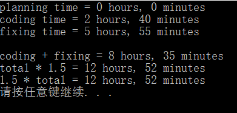

原文连接:https://www.cnblogs.com/moluoqishi/p/10729034.html
一、前言
其实本人学习C++的目的，只是为了体会OOP设计思想，并为利用System Verilog验证复杂设计做准备。如果想要真正做点软件方面项目级的东西，还需要掌握其他高级语言和库、框架等知识。因此该系列博文仅注重语言基础和设计思想。上一篇该系列博文讲述了C++中基本的类封装，这次利用运算符重载友元函数来体会下C++的灵活性。
二、运算符重载友元函数
本文同样以《C++ Primer Plus》中的一个简单示例来讲解此内容。场景如下：时间粗劣地分为时和分两部分。需要完成两个时间的相加、时间与倍数的相乘（这个操作不太恰当，凑活看吧）以及显示时间操作。先上代码：
类声明：


1 #ifndef MYTIME_H_
2 #define MYTIME_H_
3
4 using std::ostream;
5
6 class Time
7 {
8 private:
9 int hours;
10 int minutes;
11 public:
12 Time();
13 Time(int h,int m=0);
14 void Reset(int h = 0,int m = 0);
15 Time operator+(const Time& t) const;
16 Time operator*(double mult) const;//成员函数
17
18 friend Time operator*(double m,const Time& t) //友元函数(inline)
19 {return t * m;}
20 friend ostream& operator<<(ostream & os,const Time& t);//<<左侧必须是ostream对象 返回ostream&
21 };
22 #endif类方法定义：
1 #include <iostream>
2 #include "mytime.h"
3
4 Time::Time()
5 {
6 hours = minutes = 0;
7 }
8
9 Time::Time(int h,int m)
10 {
11 hours = h;
12 minutes = m;
13 }
14
15 void Time::Reset(int h,int m)
16 {
17 hours = h;
18 minutes = m;
19 }
20
21 Time Time::operator+(const Time& t) const
22 {
23 Time sum;
24 sum.minutes = minutes + t.minutes;
25 sum.hours = hours +t.hours +sum.minutes / 60;
26 sum.minutes %= 60;
27 return sum;
28 }
29
30 Time Time::operator*(double mult) const
31 {
32 Time result;
33 long totalminutes = hours * mult * 60 + minutes * mult;
34 result.hours = totalminutes / 60;
35 result.minutes = totalminutes % 60;
36 return result;
37 }
38
39 ostream& operator<<(ostream& os,const Time& t)
40 {
41 os << t.hours << " hours, " << t.minutes << " minutes";
42 return os;
43 }以上代码的设计原则是：想让Time类对象的相加、与常数相乘以及打印操作与C++内置类型一致。因此+、*、<<三个符号必须进行运算符重载操作，即对此类对象使用这三个运算符时的具体实现细节需重新定义。声明格式为：<返回值类型> operator<op>()。但是这里存在一个问题，成员函数Time operator*(double mult) 在被调用时，类对象必须放置在*符号左侧，也就是说当表达式为m*t(t为Time类对象)时，编译器会报错。使用<<运算符打印Time类对象时同样会遇到此问题。
为了实现用户友好，使用没有此限制的友元函数重载运算符是个不错的选择。友元函数是类接口的扩展，这类函数虽然不是类成员函数，但可以访问类私有成员。需要注意的一点是：<<输出数据时，左侧必须是ostream类对象。因此重载<<运算符时，必须使函数返回参数中ostream类对象本身才能正确编译cout << A << B;语句。这条语句与(cout << A) << B;等同。
三、应用程序及结果分析
应用程序示例代码：
1 #include <iostream>
2 #include "mytime.h"
3
4 using std::endl;
5
6 int main()
7 {
8 using std::cout;
9
10 Time planning;
11 Time coding(2,40);
12 Time fixing(5,55);
13 Time total;
14 Time adjusted1,adjusted2;
15
16 cout << "planning time = ";
17 cout << planning << endl;
18
19 cout << "coding time = ";
20 cout << coding << endl;
21 cout << "fixing time = ";
22 cout << fixing << endl;
23 cout << endl;
24
25 total = coding + fixing;
26 cout << "coding + fixing = ";
27 cout << total << endl;
28
29 adjusted1 = total * 1.5;//调用成员函数
30 cout << "total * 1.5 = ";
31 cout << adjusted1 << endl;
32
33 adjusted2 = 1.5 * total;//调用友元函数
34 cout << "1.5 * total = ";
35 cout << adjusted2 << endl;
36
37 }Time类对象planning创建时隐式调用用户定义默认构造函数，而coding和fixing因有参数传递调用第二个构造函数，这正是C++的多态性质。可以看到，打印Time类对象与打印C++内置类型对象无异。重点关注“*”运算符的使用，adjusted1和adjusted2表达式中乘法运算依次调用了成员函数和友元函数。C++编译器同样会自动识别用户的意图。打印结果如图：

应用程序运行正确，重载的两个Time类对象的加法运算和Time类对象与常数的乘法运算结果无误。之后的两篇博客依次讲述动态内存分配与类继承内容，有错误的地方欢迎指正。